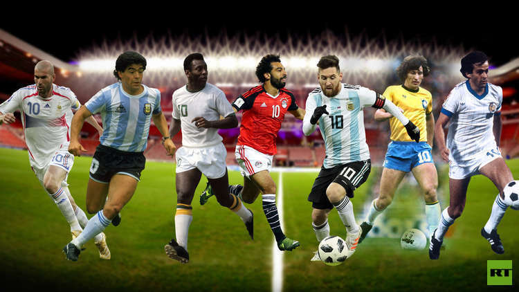

the most popular sport in the world. It is a team sport played between two teams using a spherical ball.
In football, every team is consisted of 11 players.
And the period of the game within every match is ninety minutes,
divided into 2 halves of forty five minutes every.
Between every half, there is an opening for less than quarter hour.
And one referee assisted by 2 linesmen conducts the game.
The goal of this game is to score by putting the ball into the adversary goal,
and the winner who scores the most goals.
Football has many benefits.
First, it relieves stress, and it is good source of being fit.
It doesn't only maintain the physical exercise of the players,
but also teaches them the importance of values, discipline,
leadership, and unity. Second, it is a game of excitement.
Anyone who loves football gets a lot of excitement and thrill by playing and watching it.
Third, it is a game of potential.
As when someone starts playing football with extra fat and calories,
he will burn them easily, consequently his physical health will be improved.
Fourth, it is a source of income.
When international matches are played in any country, it increases the economy of the nation.
Fifth, it promotes peace and unity among different countries of the world, as it is a global game.
And when players from different countries play together, they forget enmity and live in peace.